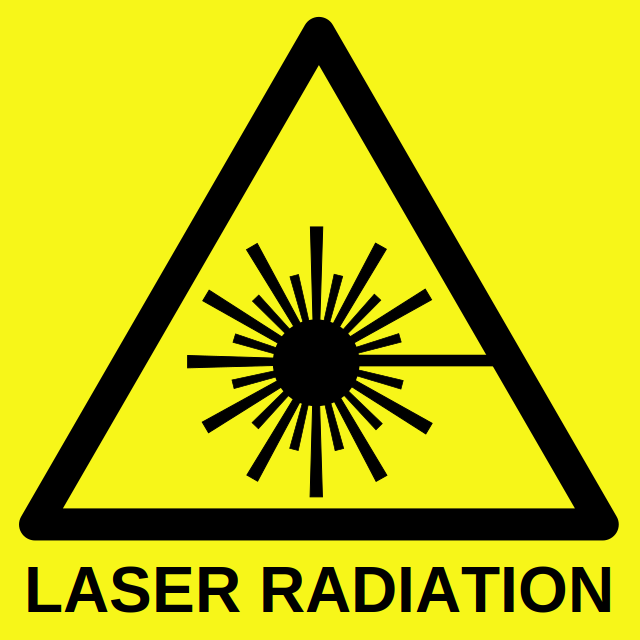

Laser diodes
Lasers are
dangerous.
VERY dangerous. Especially the power ones or the IR ones you can't see. I found a scarry formula on the net that resumes this very well : "
put gogles or you will get blind before you understand something wrong happened". Scarry right ? So go and buy those cheapo 5 USD goggles or topnotch 50 USD multi class goggles on eBay.
Laser 101 : readme
First things first : laser diodes work generally with low voltage and high current. But when they get hot their resistance drop, so the current raise, so they get hotter ... and it ends with magic smoke if you don't control the current. To avoid the
thermal runaway of laser diodes, one
must use a
constant current driver.
Constant current driver
Different options : eBay (as usual) if you have a few extra cash in the pocket, or hand made.
For the hand made way, you can use dedicated chips (Maxim ????) or use a LM317 voltage regulator(!) :
Links
Tutorials